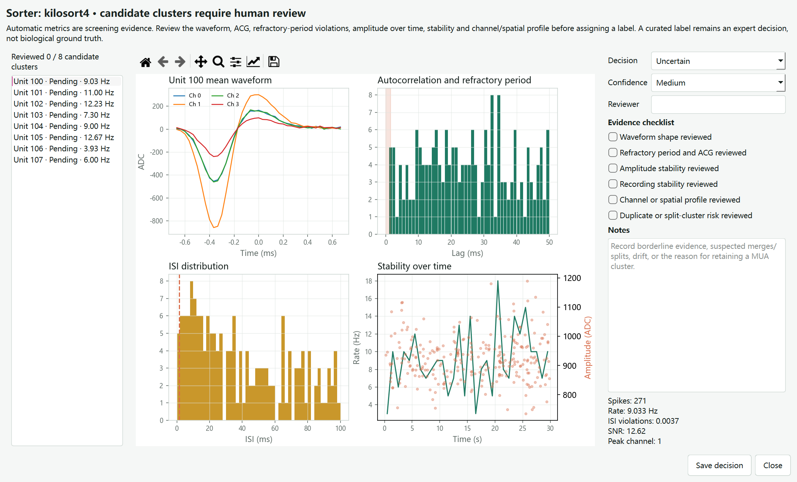

NeuroEphys AI 操作手册
Unit 人工复核
每个sorter输出的cluster均先视为候选。人工复核记录保留、排除或暂缓决定所依据的证据，同时保留sorter原始输出。
为什么需要人工复核
Kilosort4、MountainSort5、SpyKING CIRCUS 2等工具采用不同检测与聚类策略，候选unit数量可能不同。算法一致度反映可复现性，无法直接等同于生物学真值；人工复核负责按实验室规则审查证据。
复核步骤
- 激活需要复核的sorter结果，然后进入“Unit质控”。
- 选择一个unit，查看波形、自相关图、ISI违例、放电率、SNR、振幅随时间变化和可用的sorter诊断。
- 检查波形在时间和通道上的一致性；突变、截断或不合理形状需要进一步核查。
- 检查不应期证据；单一阈值无法独立决定unit身份。
- 查看整段记录的振幅和放电率稳定性；短片段可能掩盖漂移或记录中断。
- 比较邻近或高度相似cluster，检查重复、错误拆分和错误合并。
- 选择标签，完成证据清单，填写专家备注并保存。
- 逐个复核需要保留的候选；导出包含复核人、时间、指标快照、sorter和来源run的决定表。

可选标签
| 标签 | 使用条件 |
|---|---|
| 候选单神经元 | 波形、不应期、稳定性与隔离证据支持单神经元使用；最终纳入仍应遵循研究方案。 |
| 多单元活动 | 存在生物放电，但与邻近神经元的分离证据不足。 |
| 噪声 | cluster主要由伪迹、电噪声或无效波形结构构成。 |
| 不确定 | 证据不完整或相互冲突，保留该unit供后续继续检查。 |
通用证据与工具特有证据
标签与证据清单对sorter通用。每个结果仍保留原生诊断：Kilosort模板、振幅、深度-时间图、漂移和污染字段持续可见；其他sorter保留各自原生文件。复杂的拆分/合并可以在Phy等专用工具中完成，再通过sorting结果适配器导回。